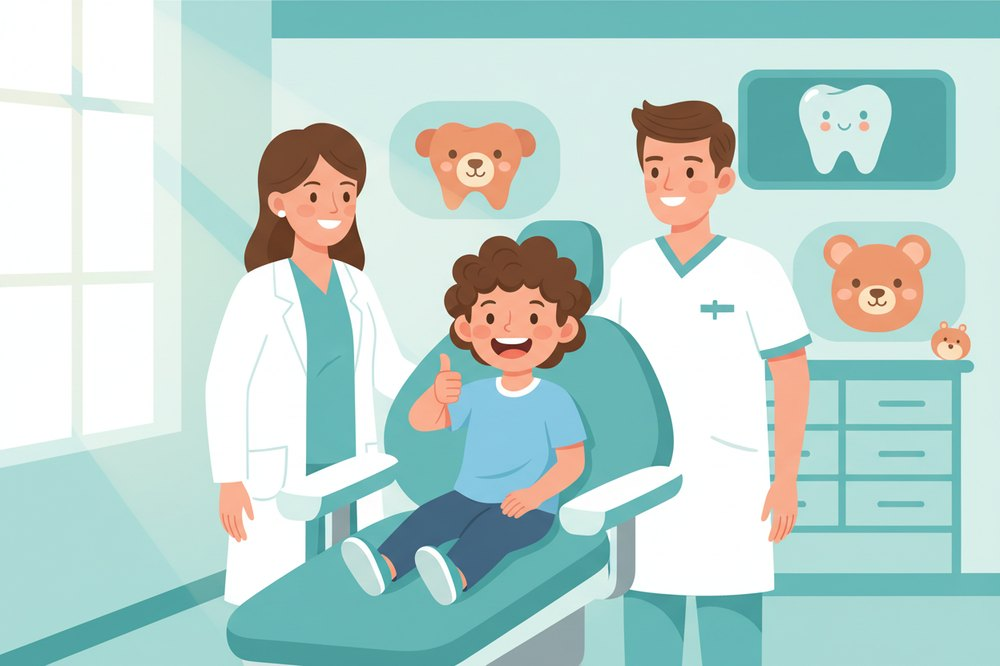

Most parents bring their child to a dentist for the first time because something already hurts. That first visit then involves treatment, and the child learns that dental clinics are places where painful things happen. Every visit after that becomes a negotiation. There is a better sequence, and it starts earlier than most families think.
By the first birthday, or within six months of the first tooth appearing, whichever comes first. Yes, that sounds early for a mouth with three teeth in it. The point of that visit is the opposite of treatment: the child sits on a parent's lap, the dentist counts the teeth, checks how they are coming in, and talks to you about brushing and bottle habits. It takes ten minutes. The child leaves with a sticker and the memory of a room where nothing bad happened.
Around age three or four, when all the baby teeth are in, the first proper check-up looks at decay between teeth, the way the bite is forming, and habits like thumb sucking or mouth breathing that shape the jaw as it grows. Catching a small cavity at four is a two-minute fix. Catching the same cavity at seven often means a child who has already spent a night crying from pain, which colours every dental visit for years.
Three things that genuinely help. Book a morning slot, when children are rested and cooperative, rather than the end of a tiring day. Talk about the visit in ordinary words: the dentist will count your teeth and take a picture with a special camera. Avoid promising there will be no injection, because that introduces the idea that injections were on the table. And skip the bribery; a promised reward tells a child that something scary is coming.
Baby teeth matter more than their expiry date suggests. They hold the space for the permanent teeth growing underneath, and a baby molar lost early to decay can shift the whole row, meaning years of braces later to undo what a small filling would have prevented. Decayed baby teeth also hurt, in exactly the same way adult teeth do, even when children cannot put the pain into words.
Our clinic in New Alipore sees children of all ages, and the doctors take the time the child needs rather than the schedule allows. Bring them in early, keep the visits routine, and dental care stays a normal part of life instead of a recurring crisis.
First check-ups at our clinic are calm, short and mostly about getting comfortable in the chair.